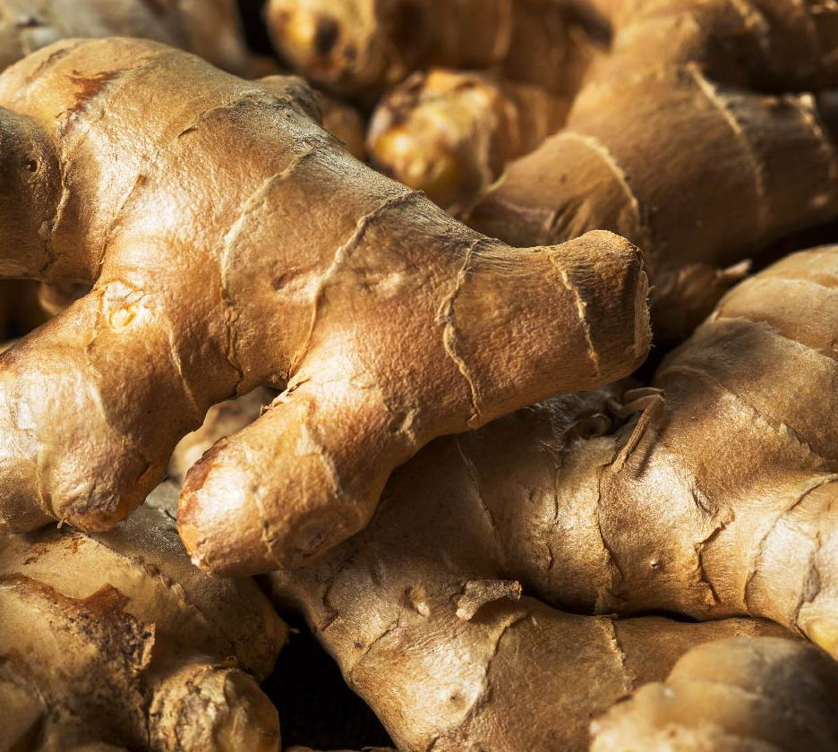
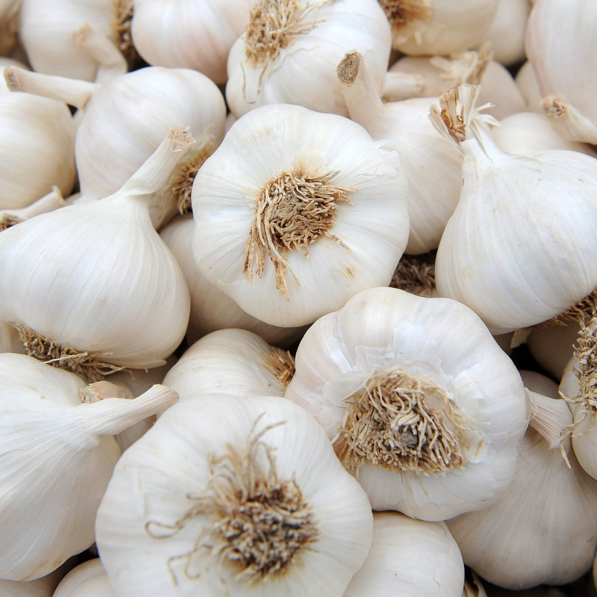
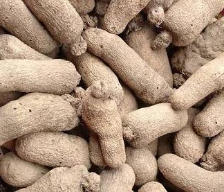
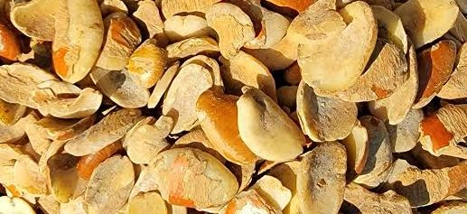
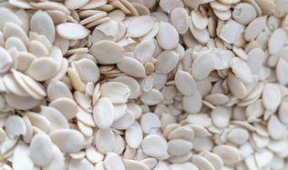

BITTER KOLA (GARCINIA)

BITTER KOLA NUT (GARCINIA KOLA NUT) : Is an edible seed produced by bitter kola tree. It is found mostly in west/central Africa and Asia Bitter kola have numerious health benefits and can be use in treatment of hepatitis, infections, etc and to boost immune system
- BITTER KOLA(GARCINIA KOLA) EXPORT SPECIFICATION
- Country of Origin: NIGERIA
- Moisture Content: less than 10%
- Purity: 99% natural no additives or preservatives
- Packaging: Available in bulk (25kg,50kg) bags or retail packaging (100g,500g)
- Appearance: Bark or light brown in outer shell and lighter interior
- Shell life: 12 - 18 months under dry storage conditions
- FOB : 24USD PER KG, PRICE ARE NEGOTIABLE
- Trial Order: 100KG PER WEEK
- SUPPLY CAPACITY : 400KG - 10TONNES PER MONTH
- PAYMENT TERMS : T/T ,ADVANCE PAYMENT,ETC (50% UP FRONT PAYMENT)
- DELIVER TIME: 14DAYS FROM THE DAY OF T/T CONFIRMENT
GINGER(RHIZOMA)

GINGER/RHIZOMA : Is a commonly used as spices in many parts of the world. Ginger have numerious health benefits due to its anti-inflammatary,anti-nausea and other properties .it can be use in manufacturing of traditional medicine and food supplements
- GINGER EXPORT SPECIFICATION
- Country of Origin : NIGERIA
- Mositure Content: < 10%
- Product : Dried or Fresh Raw Ginger
- Foreign Matter: < 1%
- Color: light brown to yellowish
- Packaging : pp bags
- Shell life: up to 12months under proper storage
- Inspection: cotecna , SGS and Intertek
- FOB : PAYMENT TERM: T/T OR T/C (50% UP FRONT PAYMENT)
- SUPPLY CAPACITY:200KG - 10 TONNES PER MONTH
- DELIVERY: 15DAYS - ONE MONTH
UNSHELLED CASHEW NUTS
.jpg)
UNSHELLED CASHEW NUTS: Is a kidney shaped seed, sourced from cashew tree it is found in tropical Africa and other parts of the world it contains mineral acids ,rich in nutrients and offer several health benefits
- UNSHELLED CASHEW NUTS EXPORT SPECIFICATION
- Country of Origin: NIGERIA
- Moisture Content: 8 -9% maximum
- Defective nuts : 5% maximum
- Float rate 18%
- Admixture and foreign matter: 0.25%
- Shell out turn: 48-50lbs/bag
- FOB: 0.5 - 1USD PER KG
- SUPPLY CAPACITY: 5 - 20 TONNES PER MONTH
- PAYMENT TERM: T/T,ADVANCE PAYMENT(50% UP FRONT)
RAW GARLIC (ALLIUM SATIVUM)

GARLIC(ALLIUM SATIVUM) : It is a specie of bulbous flowering plants in the genus Allium Garlic have been used for culinary and medicinal purpose in many cultures for many centuries it is a source of organosulfur compound
- RAW GARLIC EXPORT SPECFICATION
- Country of Origin: Nigeria
- Purity: 99%
- Product: natural Raw Garlic white or brown color
- Supply capacity : base on buyers demand
- Trial order: 50kg or less
- Delivery: 15 -25 days after confirmation of T/T payment
- FOB: 14.5 15USD PERKG
- Shell life: 3-6 months
TURMERIC

TURMERIC: Is a plant in the ginger family,it is a golden-orange spice known for adding color,flavor and nutrients to food. It have numerious health benefits
GARRI FLOOR (WHITE AND YELLOW GARRI)

GARRI FLOOR : Is the most important food in Africa, it is been processed from starchy cassava root There are two type white and yellow Garri it have various nutrients
YAM (DIOSCORES)

Yam (DIOSCORES): Is the second most popular root/tuber crop in Africa,it is important crop for food and contains numerious nutrients like carbohydrate, vitamins etc
OGBONO SEED AND EGWUISI SEED


OGBONO SEED : Is been sourced from Africa bush mango tree ,the seed is used to thicken soup and have a unique flavour with numerious health benefits EGWUISI SEED : Also is been sourced from native melon plant in Africa,the seed is used to cook soup, stews and other dishes it contains numerious nutrients like protein,zinc,iron and fats etc.
- Country of Origin: NIGERIA sun dry and hand extracted african mngo tree, sun dry and hand processed Egwisi seed
- Moisture: 7.05
- color Ogbono light brow color back, Egwisi white or ceamy color when pilled
- Purity:99%
- Drfective: <1%
- Packaging 25 - 50kg bags or lesser for retail purposes
- PAYMENT TERMS :T/T OR ADVNCE PAYMENT(50%)
- FOB OF OGBONO: FOB OF EGWISI:
- DELIVERY TIME : 15 DAYS -30DAYS